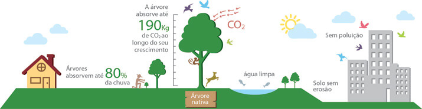

O que é recomposição florestal??
A recomposição florestal é o plantio de vegetação nativa de determinada região com o objetivo de recompor o que foi desmatado e ao mesmo tempo, também, de compensar as emissões de gases de efeito estufa (GEE) de qualquer atividade humana – visto que cada árvore absorve carbono, um dos gases causadores do efeito estufa, durante o seu crescimento.
Por que recompor a mata nativa?
Além de reter o carbono disponível na atmosfera, o gás no ar pode agravar o aquecimento global, as árvores nativas contribuem para a preservação da biodiversidade, dos recursos hídricos e da conservação do solo. Como os trabalhadores do campo são os contratados para fazerem os plantios, as árvores ainda têm o valor social de gerar renda no campo.
